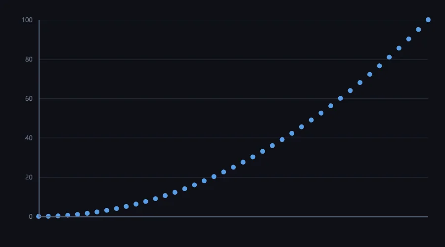

Un nombre dans Softanza sait s'il est exact, et dit pourquoi quand il ne l'est pas. C'est la seule chose dont NumPy n'a pas la notion, et c'est là que ce domaine commence.
Un tiers ne fait pas semblant : diviser 1 par 3 donne un nombre qui sait qu'il n'est pas exact, et dit ce qui a été perdu. 0,1 plus 0,2 vaut exactement 0,3, parce que les décimaux sont des entiers mis à l'échelle. Un prix déclaré comme monnaie reste monnaie : 15 pour cent de 19,99 tombent sur 3,00, deux décimales avec l'arrondi du comptable, jamais 2,9985. Un seul type de nombre porte plusieurs formes intérieures, entier, grand entier, rationnel, décimal, choisies pour vous ; et le régime voyage avec la valeur au lieu de vivre dans un mode global réglé par le dernier venu.
Au-dessus du scalaire, l'algèbre linéaire dense au niveau de LAPACK : multiplication, LU, QR, Cholesky, SVD, moindres carrés, pseudo-inverse, et valeurs propres générales non symétriques par un QR de Francis à double décalage, écrit à la main et vérifié face à NumPy à huit ou douze décimales. La différentiation automatique en mode inverse va de pair avec un optimiseur L-BFGS ; un problème d'optimisation peut s'écrire comme une phrase, maximize 3*x + 2*y where ..., et se résoudre comme le même modèle bâti en code.
o1 = new stzMatrix([ [ 2, 1 ], [ 1, 3 ] ])
# the unknowns of 2x + y = 3 and x + 3y = 5
? @@( o1.SolveFor([ 3, 5 ]) )
#--> [ 0.80, 1.40 ]
? o1.Determinant()
#--> 5
exécuté dans la bibliothèque le 2026-10-20
La discipline est le produit. Chaque route parallèle est conditionnée par une mesure ; chaque noyau est identique au bit près sous plusieurs fils ; la sommation est compensée ; et les « manques » sont souvent des refus consignés comme résultats : le multicœur élément par élément abandonné parce que le mur de la mémoire gagne, le GPU en double précision refusé parce que le silicium le fait au soixante-quatrième de sa vitesse.
Ce n'est pas un NumPy, délibérément : pas de diffusion, pas de tableaux à n dimensions, un pic de multiplication brute sous un BLAS réglé, une FFT en radix 2 seulement. Le Compas compte cinq couloirs Strong et cinq Solid, et nomme la FFT de taille quelconque et le reste de la surface complexe comme ce qu'il faut compléter d'abord.

un nuage de points de x au carré, famille des graphiques. rendu le 2026-10-01 à 04:00 par le script de rendu du site tools/areas.ring, exécuté dans la bibliothèque au commit 0e72e2e2c · la source(s'ouvre dans un nouvel onglet)
Où il en est
La lecture du Compas Softanza : chaque couloir du domaine noté face au meilleur de sa catégorie, d'après ce que les gardes prouvent (Read from the source on 2026-09-16). Les phrases du Compas sont en anglais, telles qu'il les a écrites.
The most rigorously measured module in the library — P0–P7 complete, ~1,827 assertions, every parallel route gated by a measured threshold and every kernel bit-identical under threads. It leads with something NumPy has no concept of: exactness — an arbitrary-precision numeric tower (bignum, exact rational, money-exact decimal) with a register that tells you why a value is exact or not. On dense linear algebra it reaches LAPACK-tier decompositions, and it ships reverse-mode autodiff with L-BFGS. It is deliberately "not a NumPy": no broadcasting, raw matmul peak below tuned BLAS, and it refuses what it cannot measure a use for.
The honesty line on the ratings. Verification here is unusually strong: P0–P7 complete, ~1,827 numeric assertions checked against a NumPy reference oracle (decompositions to 8–12 decimals, matmul bit-identical across the reorder and across threads). Crucially, many "gaps" are deliberate, measured refusals recorded as results — elementwise multicore killed (PCIe / memory wall), GPU f64 refused (1/64-rate silicon), mpdecimal / OSQP / HiGHS / KISS FFT not built "because nothing calls them." Read those as discipline, not as a to-do list.
The one-sentence position. Softanza's numeric foundation trades NumPy's breadth for exactness, correctness and measured discipline: an arbitrary-precision exact tower NumPy lacks, LAPACK-tier decompositions with reverse-mode autodiff, and a residency-and-gating model where nothing parallel ships without a measurement. Its real distance from the top is raw BLAS throughput and a general FFT — everything else it's missing, it's missing on purpose.
Ce qu'un artisan en fait, et ce qui se distingue
An exactness register (IsExact, Why, Representation) that NumPy has no concept of
General non-symmetric eigen with a Francis double-shift QR, hand-rolled and verified
Reverse-mode autodiff paired with a real quasi-Newton (L-BFGS) optimizer
Nothing parallel ships without a measurement; many gaps are deliberate, measured refusals
Ce qui est dû
Arbitrary-N and multi-dimensional FFT (mixed-radix / Bluestein, rfft, 2-D)
Complete the complex surface: log, inverse-trig and general powers
Ce que Softanza a gardé de ce qui marche, et ce qu'elle a repensé, tel que la bibliothèque l'a écrit dans ses documents de conception et ses narrations.
La manière SoftanzaUn nombre doit savoir s'il est exact et dire pourquoi quand il ne l'est pas ; le cadre qui infléchit un résultat doit être visible là où l'on s'en sert.
Gardé des meilleures pratiques
Les nombres machine restent en double précision IEEE-754, avec l'arrondi au pair comme défaut annoncé, la règle comptable, car l'arrondi vers le haut fait dériver un long registre. source(s'ouvre dans un nouvel onglet)
Des méthodes numériques classiques et stables par défaut : sommation compensée, moments de Welford et décompositions standard LU, QR, Cholesky et SVD. source(s'ouvre dans un nouvel onglet)
Les résultats sont jugés face à des oracles de référence — NumPy et rationnels exacts — avec une tolérance tirée du conditionnement du problème, jamais une constante choisie à la main. source(s'ouvre dans un nouvel onglet)
Repensé
Un seul type de nombre, aux formes internes multiples — entier, grand entier, rationnel, décimal — choisies automatiquement : le choix du type revient au système, pas à l'utilisateur. source(s'ouvre dans un nouvel onglet)
Un nombre sait s'il est exact, et WhyNotExact() nomme ce qui a été perdu, car une surprise numérique vient presque toujours d'un cadre que l'appelant ne voyait pas. source(s'ouvre dans un nouvel onglet)
Le régime voyage avec la valeur : la monnaie garde deux décimales avec l'arrondi bancaire, un nombre exact refuse de devenir approché, au lieu d'un réglage global hérité du dernier appel. source(s'ouvre dans un nouvel onglet)
Un modèle d'optimisation s'écrit en objet, en phrase ou en fichier, tous construisant le même modèle, pour que deux surfaces ne divergent jamais en silence ; Why() nomme le solveur employé. source(s'ouvre dans un nouvel onglet)
La manière Softanza, exécutée
Ce que Softanza fait autrement dans ce domaine, montré par du code tiré de ses narrations et de ses gardes, et exécuté pour cette page.
Un divisé par trois ne prétend pas être exact, et le nombre dit lui-même pourquoi.
Softanza
oThird = new stzNumber("1")
oThird.Divide("3")
Then("1 / 3 does NOT claim to be exact", oThird.IsExact(), FALSE)
Then("...and says why", StzFindFirst("does not terminate", oThird.Why()) > 0, TRUE)
Sortie
THEN 1 / 3 does NOT claim to be exact [PASS]
THEN ...and says why [PASS]
Un problème d'optimisation écrit comme une phrase se résout comme le même modèle construit en code, et atteint 130.
Softanza
oS = StzOptimNaturally("
maximize 3*x + 2*y
where x is between 0 and 40
and y is a whole number at least 0
keeping x + y under 50
and keeping 2*x + y under 80
")
oS.SolveWith(:auto)
? oS.Objective()
12 couloirs, chacun face au meilleur de sa catégorie
Pour chaque couloir : ce qui tourne dans le moteur aujourd'hui, les outils contre lesquels il est juste de le mesurer, et ce qui reste dû.
01Scalar arithmetic & exactnessStrong
In the engine
An arbitrary-precision tower over std.math.big: bignum, exact rationals, and money-exact decimal (scaled integers, so 0.1+0.2 is exactly 0.3), plus a full number-theory set. An exactness register — IsExact(), Why(), Representation() — reports why a value is exact or approximate.
Measured against
Python int / Decimal / FractionGMPNumPy (f64 only)
To complete
A genuine differentiator: NumPy has no exactness concept at all. The 2⁷³ f64 boundary is handled by storing the value as a string and routing arithmetic away from the float path.
02Matrices & linear algebraStrong
In the engine
matrix.zig + linalg.zig: matmul (i-k-j SIMD + threaded), determinant via LU, Solve, Inverse, LeastSquares, PseudoInverse (Penrose-4 verified), rank, condition number — all engine-backed and checked against NumPy.
Measured against
NumPy / LAPACKEigenGSL
To complete
Core dense LA is at parity for correctness. Raw throughput is the ceiling, not coverage — see lane 12.
03Eigen & decompositionsStrong
In the engine
Symmetric eigen (Jacobi) and — the hard part — general non-symmetric eigen in eigen_general.zig: Parlett-Reinsch balancing, Householder→Hessenberg, Francis double-shift QR, Schur forms. Plus one-sided-Jacobi SVD, Householder QR, Cholesky, and polynomial roots via companion matrix.
Measured against
LAPACKEigenNumPy linalg
To complete
The decomposition set is LAPACK-tier and genuinely hard to get right — general eigen with a Francis QR is not something most libraries hand-roll correctly. At parity for the analyst's needs.
04Automatic differentiation & optimizationStrong
In the engine
Reverse-mode autodiff (autodiff.zig, a compiled tape) with valueAndGradient, and L-BFGS with a bracket-and-zoom strong-Wolfe line search (lbfgs.zig). Verified against hand-derived gradients to 8–12 decimals; Rosenbrock converges in 34 iterations.
Measured against
scipy.optimize.minimizeautograd / JAX (grad)Ceres
To complete
Reverse-mode AD plus a real quasi-Newton optimizer is a strong, uncommon pairing in a general library. The optimizer returns a full record (status, iterations, Why()).
05Acceleration & residencyStrong
In the engine
The discipline is the product: SIMD + row-banded threaded matmul (16× cache reorder, +19% vector, up to 7× threaded), Neumaier compensated summation (2.5×), and a residency model where the engine copy is truth — resident reductions run 19× faster. Every route is admitted only above a measured calib.Gate threshold, and results are bit-identical under threads.
Measured against
NumPy (BLAS)Eigen (SIMD)MKL / OpenBLAS
To complete
Raw single-thread matmul peaks ~15 GFLOP/s — below a tuned BLAS — because there is no MKL/OpenBLAS binding. The rigor is category-leading; the raw ceiling is not.
06Vectors & buffersSolid
In the engine
stzNumBuffer over numbuf.zig — a contiguous, engine-owned f64 buffer with dot, scale, add/sub/mul and reductions (sum/mean/variance/stddev) that never marshal. The residency keystone.
Measured against
NumPy ndarrayEigen VectorGSL vector
To complete
Deliberately "not a NumPy": no broadcasting, no fancy indexing, no dtype algebra, no n-D arrays. A 1-D f64 workhorse, not a tensor library — multi-dimensional tensors live in the Neural tier.
07Linear & integer programmingSolid
In the engine
Real LP/MIP: an engine simplex (simplex.zig, measured 41× after a cubic re-parse fix) with a branch-and-bound integer tier, driven from a modelling DSL (stzOptimModel) and an exact coefficient compiler (no eval()), plus a natural-language sentence surface to the same AST and a .zopt file round-trip.
Measured against
scipy.optimize.linprogGLPKHiGHS / OR-Tools
To complete
No interior-point method, no large-scale MIP (HiGHS deliberately not vendored) and no QP (OSQP refused — no consumer). A capable modelling+solve surface, not an industrial solver.
08Special functionsSolid
In the engine
special.zig: erf/erfc, log-gamma and gamma, incomplete gamma and beta as workhorses, and the Normal/t/χ²/F distribution CDFs and quantiles that power the statistics plane.
Measured against
GSL special functionsscipy.specialBoost.Math
To complete
Testing-focused. The wider GSL catalogue — Bessel, Airy, elliptic, hypergeometric — is absent (no consumer yet). No dedicated stzNumber special-function face.
09Solvers & rootsSolid
In the engine
solver.zig: linear and quadratic roots, bisection, Newton, Simpson integration, polynomial evaluation, and the interpolation helpers (lerp / clamp / map-range). stzPolynomial and stzMathFunction sit on top.
Basic: no adaptive quadrature, no ODE/BVP solvers, no multi-dimensional root finding — the standard GSL/SciPy fare beyond single-variable roots and fixed-rule integration.
10Random & samplingSolid
In the engine
random.zig over Zig's Xoshiro / PCG / ChaCha generators: seeded ints, floats, Gaussian, exponential, bulk-n variants, shuffle, Bernoulli and weighted choice, under one SeedRandom authority.
Measured against
NumPy random (Generator)GSL rngstd distributions
To complete
Good generators, but a narrow distribution set next to NumPy's Generator — no binomial, Poisson, gamma, beta or Dirichlet samplers yet.
11FFT & spectralPartial
In the engine
fft.zig: radix-2 Cooley-Tukey with the NumPy fft/ifft convention, plus convolveReal, magnitudes, phases, power spectrum and dominant-bin detection.
Measured against
NumPy fftFFTWKISS FFT
To complete
Radix-2 only — non-power-of-2 sizes, a real-optimized rfft, and multi-dimensional transforms are all missing. Fine for the current spectral consumers, short of a general FFT.
12Complex numbersPartial
In the engine
complex.zig: arithmetic, modulus (hypot), argument, conjugate, principal square root and exp, with division via Smith's formula for numerical stability. Surfaced as stzComplex and in ComplexEigenValues().
Measured against
NumPy complexC++ std::complexPython cmath
To complete
Deliberately partial: no log, inverse-trig or general powers — a stated branch-cut policy plus no current consumer. Enough for eigenvalues, not for complex analysis.
Ce qui est dû, dans l'ordre du rendement
Les manques, classés par ce qu'ils rapportent et non par leur taille ; la valeur est l'effet sur la portée de la bibliothèque, l'effort une lecture d'ingénieur.
Tier A — genuine capability gaps
Arbitrary-N & multi-dimensional FFT
Beyond radix-2: mixed-radix / Bluestein for non-power-of-2 sizes, a real-optimized rfft, and 2-D transforms. This is table stakes against NumPy/FFTW and the clearest owed item in the compute set.
Valeur · élevéeEffort · moyen
Complete the complex surface
Log, inverse-trig and general powers with a stated branch-cut convention. Today complex is "enough for eigenvalues"; a consumer needing complex analysis or signal work hits the wall immediately.
Valeur · moyenneEffort · moyen
Tier B — cheap breadth
Adaptive quadrature + an ODE stepper
Adaptive Gauss-Kronrod integration and a Runge-Kutta ODE solver over the existing solver.zig — the standard GSL/SciPy toolkit the roots lane stops just short of.
Valeur · moyenneEffort · moyen
Broaden the sampling distributions
Binomial, Poisson, gamma, beta and Dirichlet samplers over the existing generators — small additions that close the gap to NumPy's Generator and directly feed the statistics plane's resampling gap.
Valeur · moyenneEffort · faible
Feature standardization for the trainer
The pinned issue: logistic regression diverges on unscaled features. Wiring standardization into the trainer is a small, known fix that removes a documented sharp edge.
Valeur · faibleEffort · faible
Tier C — strategic (and partly against the stated philosophy)
A tuned BLAS path for raw throughput
An MKL/OpenBLAS binding (or a GPU f32 route) would lift matmul from ~15 GFLOP/s toward tuned peak. Runs against "not a NumPy," so worth it only if numeric throughput becomes a first-class goal.
Valeur · moyenneEffort · élevé
The GSL special-function catalogue
Bessel, Airy, elliptic and hypergeometric functions. Currently absent for want of a consumer — add them when a consumer (physics, signal, advanced stats) actually arrives.
Valeur · moyenneEffort · moyen
QP & industrial-scale MIP
Quadratic programming (OSQP-class) and large-scale MIP (HiGHS-class), both refused today for lack of a consumer. Strategic if the optimization plane grows past modelling-and-solve.
Valeur · moyenneEffort · élevé
La conception, telle que la bibliothèque l'a écrite (4)
Les documents de conception de ce domaine, lus dans le dépôt au commit 4a184e6f0 : ce que chacun est, son plan, et le lien vers le texte entier.
Numbers in Softanza — a global rethink
3 167 lignes · 9 sections · écrit le 2026-07-25, revu le 2026-07-29
Une refonte des nombres pour toute la bibliothèque, phases 0 à 7 terminées, qui remplace le plan du moteur numérique par cinq piliers : exactitude visible, cadre numérique nommé à l'appel, tableaux résidents dans le moteur, noyaux SIMD en Zig, et une seule autorité par algorithme.
321 lignes · 8 sections · écrit le 2026-07-23, revu le 2026-07-25
Un plan en six phases, remplacé le 2026-07-25 par la fondation numérique, pour rendre l'arithmétique à précision arbitraire native : il corrige l'affirmation qu'aucun moteur de grands nombres n'existe, StzBigInt fonctionnant déjà, et propose une classe de grands nombres, décimaux, rationnels et complexes.
Le plan
Why this document exists (and one correction it makes)
Part 1 — Ground truth (what exists today)
Part 2 — The differential-value argument (why this is worth engine work)
Part 3 — The plan
Part 4 — The engine-extension recipe (how each new type lands)
La charte du plan mathématique (M0), brouillon attendant la ratification de l'auteur : les mathématiques dans Softanza sont d'abord vues, toujours prouvées et apprises dans la langue de l'apprenant ; elle fixe le vocabulaire et les lois et liste les décisions que seul l'auteur peut prendre.
Le plan
0. The sentence
1. What Softanza owns, and what it concedes
2. What this plane adds
3. The vocabulary
4. The laws
5. Audiences, levels, and what "proven" means at each
SOFTANZA MATH PLAN -- the map, the contracts, the phases
1 307 lignes · 7 sections · écrit le 2026-09-25, revu le 2026-09-27
Plan compagnon de la charte mathématique, présenté comme brouillon M0, cartographiant l'existant avec numéros de ligne, listant les contrats consommés et consignant les phases M1 à M6 (figures, mouvement, un cours, le niveau Tukey, approfondissement du cœur, un pont vers Lean) avec leurs résultats livrés.
Matrix Computing in Softanza with stzMatrix2025 · feature essayMatrices are the unsung heroes of computational problem-solving, powering everything from data analysis to image processing and machine learning.
Empowering Real-World Applications with Softanza's Linear Solver for Haro2025 · use caseImagine you're building an app that helps a pizza shop decide how many pizzas and salads to make daily to maximize profit. Or perhaps you're designing a game where players allocate resources to build the ultimate fantasy army.
Practical Randomness in Softanza2025 · feature essaySoftanza builds on Haro’s C-based random engine by offering semantic APIs that cover the most common randomness needs in programming.
Les classes de ce domaine (39)
Chaque classe mène à sa page de référence : ses méthodes, chacune avec un exemple exécuté.